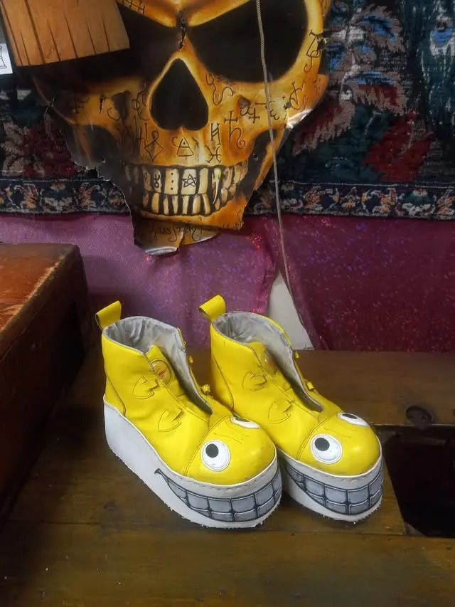

Repair
Shoe repair & restoration
Resoling, shining and full restoration — "we've been in the business of extending the lives of shoes for decades," as Boris puts it. Beloved pairs get a second life, not a landfill.